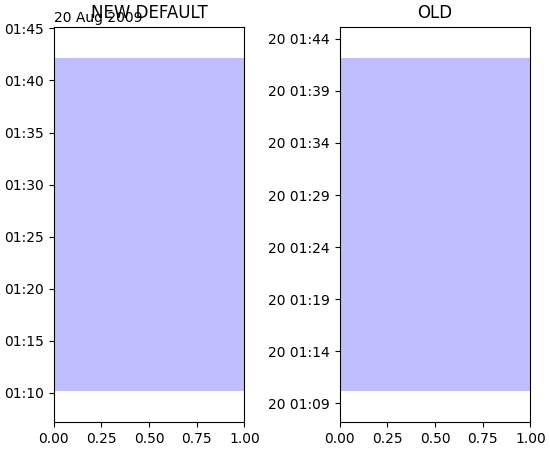

API Changes for 3.0.0¶
Drop support for python 2¶
Matplotlib 3 only supports python 3.5 and higher.
Changes to backend loading¶
Failure to load backend modules (macosx on non-framework builds and
gtk3 when running headless) now raises ImportError (instead of
RuntimeError and TypeError, respectively).
Third-party backends that integrate with an interactive framework are now
encouraged to define the required_interactive_framework global value to one
of the following values: "qt5", "qt4", "gtk3", "wx", "tk", or "macosx". This
information will be used to determine whether it is possible to switch from a
backend to another (specifically, whether they use the same interactive
framework).
Axes.hist2d now uses pcolormesh instead of pcolorfast¶
Axes.hist2d now uses pcolormesh instead of pcolorfast,
which will improve the handling of log-axes. Note that the
returned image now is of type QuadMesh
instead of AxesImage.
matplotlib.axes.Axes.get_tightbbox now includes all artists¶
For Matplotlib 3.0, all artists are now included in the bounding box
returned by matplotlib.axes.Axes.get_tightbbox.
matplotlib.axes.Axes.get_tightbbox adds a new kwarg bbox_extra_artists
to manually specify the list of artists on the axes to include in the
tight bounding box calculation.
Layout tools like Figure.tight_layout, constrained_layout,
and fig.savefig('fname.png', bbox_inches="tight") use
matplotlib.axes.Axes.get_tightbbox to determine the bounds of each axes on
a figure and adjust spacing between axes.
In Matplotlib 2.2 get_tightbbox started to include legends made on the
axes, but still excluded some other artists, like text that may overspill an
axes. This has been expanded to include all artists.
This new default may be overridden in either of three ways:
Make the artist to be excluded a child of the figure, not the axes. E.g., call
fig.legend()instead ofax.legend()(perhaps usingget_legend_handles_labelsto gather handles and labels from the parent axes).If the artist is a child of the axes, set the artist property
artist.set_in_layout(False).Manually specify a list of artists in the new kwarg
bbox_extra_artists.
Text.set_text with string argument None sets string to empty¶
Text.set_text when passed a string value of None would set the
string to "None", so subsequent calls to Text.get_text would return
the ambiguous "None" string.
This change sets text objects passed None to have empty strings, so that
Text.get_text returns an empty string.
Axes3D.get_xlim, get_ylim and get_zlim now return a tuple¶
They previously returned an array. Returning a tuple is consistent with the behavior for 2D axes.
font_manager.list_fonts now follows the platform's casefolding semantics¶
i.e., it behaves case-insensitively on Windows only.
bar / barh no longer accepts left / bottom as first named argument¶
These arguments were renamed in 2.0 to x / y following the change of the
default alignment from edge to center.
Different exception types for undocumented options¶
Passing
style='comma'toticklabel_format()was never supported. It now raisesValueErrorlike all other unsupported styles, rather thanNotImplementedError.Passing the undocumented
xminorxmaxarguments toset_xlim()would silently override theleftandrightarguments.set_ylim()and the 3D equivalents (e.g.set_zlim3d) had a corresponding problem. ATypeErrorwill be raised if they would override the earlier limit arguments. In 3.0 these were kwargs were deprecated, but in 3.1 the deprecation was undone.
Improved call signature for Axes.margins¶
Axes.margins and Axes3D.margins
no longer accept arbitrary keywords. TypeError will therefore be raised
if unknown kwargs are passed; previously they would be silently ignored.
If too many positional arguments are passed, TypeError will be raised
instead of ValueError, for consistency with other call-signature violations.
Axes3D.margins now raises TypeError instead of emitting a deprecation
warning if only two positional arguments are passed. To supply only x and
y margins, use keyword arguments.
Explicit arguments instead of *args, **kwargs¶
PEP 3102 describes keyword-only arguments, which allow Matplotlib
to provide explicit call signatures - where we previously used
*args, **kwargs and kwargs.pop, we can now expose named
arguments. In some places, unknown kwargs were previously ignored but
now raise TypeError because **kwargs has been removed.
matplotlib.axes.Axes.stem()no longer accepts unknown keywords, and raisesTypeErrorinstead of emitting a deprecation.matplotlib.axes.Axes.stem()now raises TypeError when passed unhandled positional arguments. If two or more arguments are passed (ie X, Y, [linefmt], ...) and Y cannot be cast to an array, an error will be raised instead of treating X as Y and Y as linefmt.mpl_toolkits.axes_grid1.axes_divider.SubplotDividerraisesTypeErrorinstead ofExceptionwhen passed unknown kwargs.
Cleanup decorators and test classes no longer destroy warnings filter on exit¶
The decorators and classes in matplotlib.testing.decorators no longer
destroy the warnings filter on exit. Instead, they restore the warnings
filter that existed before the test started using warnings.catch_warnings.
Non-interactive FigureManager classes are now aliases of FigureManagerBase¶
The FigureManagerPdf, FigureManagerPS, and FigureManagerSVG classes,
which were previously empty subclasses of FigureManagerBase (i.e., not
adding or overriding any attribute or method), are now direct aliases for
FigureManagerBase.
Change to the output of image.thumbnail¶
When called with preview=False, image.thumbnail previously returned an
figure whose canvas class was set according to the output file extension. It
now returns a figure whose canvas class is the base FigureCanvasBase (and
relies on FigureCanvasBase.print_figure) to handle the canvas switching
properly).
As a side effect of this change, image.thumbnail now also supports .ps, .eps,
and .svgz output.
FuncAnimation now draws artists according to their zorder when blitting¶
FuncAnimation now draws artists returned by the user-
function according to their zorder when using blitting,
instead of using the order in which they are being passed.
However, note that only zorder of passed artists will be
respected, as they are drawn on top of any existing artists
(see #11369).
Contour color autoscaling improvements¶
Selection of contour levels is now the same for contour and
contourf; previously, for contour, levels outside the data range were
deleted. (Exception: if no contour levels are found within the
data range, the levels attribute is replaced with a list holding
only the minimum of the data range.)
When contour is called with levels specified as a target number rather than a list, and the 'extend' kwarg is used, the levels are now chosen such that some data typically will fall in the extended range.
When contour is called with a LogNorm or a LogLocator, it will now
select colors using the geometric mean rather than the arithmetic mean
of the contour levels.
Streamplot last row and column fixed¶
A bug was fixed where the last row and column of data in
streamplot were being dropped.
Changed default AutoDateLocator kwarg interval_multiples to True¶
The default value of the tick locator for dates, dates.AutoDateLocator
kwarg interval_multiples was set to False which leads to not-nice
looking automatic ticks in many instances. The much nicer
interval_multiples=True is the new default. See below to get the
old behavior back:
(Source code, png, pdf)

{kind=link}
Axes.get_position now returns actual position if aspect changed¶
Axes.get_position used to return the original position unless a
draw had been triggered or Axes.apply_aspect had been called, even
if the kwarg original was set to False. Now Axes.apply_aspect
is called so ax.get_position() will return the new modified position.
To get the old behavior use ax.get_position(original=True).
The ticks for colorbar now adjust for the size of the colorbar¶
Colorbar ticks now adjust for the size of the colorbar if the colorbar is made from a mappable that is not a contour or doesn't have a BoundaryNorm, or boundaries are not specified. If boundaries, etc are specified, the colorbar maintains the original behavior.
Colorbar for log-scaled hexbin¶
When using hexbin and plotting with a logarithmic color scale, the colorbar
ticks are now correctly log scaled. Previously the tick values were linear
scaled log(number of counts).
PGF backend now explicitly makes black text black¶
Previous behavior with the pgf backend was for text specified as black to actually be the default color of whatever was rendering the pgf file (which was of course usually black). The new behavior is that black text is black, regardless of the default color. However, this means that there is no way to fall back on the default color of the renderer.
Blacklisted rcparams no longer updated by rcdefaults, rc_file_defaults, rc_file¶
The rc modifier functions rcdefaults,
rc_file_defaults and rc_file
now ignore rcParams in the matplotlib.style.core.STYLE_BLACKLIST set. In
particular, this prevents the backend and interactive rcParams from
being incorrectly modified by these functions.
CallbackRegistry now stores callbacks using stdlib's weakref.WeakMethods¶
In particular, this implies that CallbackRegistry.callbacks[signal] is now
a mapping of callback ids to weakref.WeakMethods (i.e., they need to be first called
with no arguments to retrieve the method itself).
Changes regarding the text.latex.unicode rcParam¶
The rcParam now defaults to True and is deprecated (i.e., in future versions of Matplotlib, unicode input will always be supported).
Moreover, the underlying implementation now uses \usepackage[utf8]{inputenc}
instead of \usepackage{ucs}\usepackage[utf8x]{inputenc}.
Return type of ArtistInspector.get_aliases changed¶
ArtistInspector.get_aliases previously returned the set of aliases as
{fullname: {alias1: None, alias2: None, ...}}. The dict-to-None mapping
was used to simulate a set in earlier versions of Python. It has now been
replaced by a set, i.e. {fullname: {alias1, alias2, ...}}.
This value is also stored in ArtistInspector.aliasd, which has likewise
changed.
Removed pytz as a dependency¶
Since dateutil and pytz both provide time zones, and
matplotlib already depends on dateutil, matplotlib will now use
dateutil time zones internally and drop the redundant dependency
on pytz. While dateutil time zones are preferred (and
currently recommended in the Python documentation), the explicit use
of pytz zones is still supported.
Deprecations¶
Modules¶
The following modules are deprecated:
matplotlib.compat.subprocess. This was a python 2 workaround, but all the functionality can now be found in the python 3 standard librarysubprocess.matplotlib.backends.wx_compat. Python 3 is only compatible with wxPython 4, so support for wxPython 3 or earlier can be dropped.
Classes, methods, functions, and attributes¶
The following classes, methods, functions, and attributes are deprecated:
RcParams.msg_depr,RcParams.msg_depr_ignore,RcParams.msg_depr_set,RcParams.msg_obsolete,RcParams.msg_backend_obsoleteafm.parse_afmbackend_pdf.PdfFile.texFontMapbackend_pgf.get_texcommandbackend_ps.get_bboxbackend_qt5.FigureCanvasQT.keyAutoRepeat(directly checkevent.guiEvent.isAutoRepeat()in the event handler to decide whether to handle autorepeated key presses).backend_qt5.error_msg_qt,backend_qt5.exception_handlerbackend_wx.FigureCanvasWx.macrosbackends.pylab_setupcbook.GetRealpathAndStat,cbook.Lockedcbook.is_numlike(useisinstance(..., numbers.Number)instead),cbook.listFiles,cbook.unicode_safecontainer.Container.set_remove_method,contour.ContourLabeler.cl,.cl_xy, and.cl_cvaluesdates.DateFormatter.strftime_pre_1900,dates.DateFormatter.strftimefont_manager.TempCacheimage._ImageBase.iterpnames, use theinterpolation_namesproperty instead. (this affects classes that inherit from_ImageBaseincludingFigureImage,BboxImage, andAxesImage)mathtext.unichr_safe(usechrinstead)patches.Polygon.xytable.Table.get_child_artists(useget_childreninstead)testing.compare.ImageComparisonTest,testing.compare.compare_floattesting.decorators.CleanupTest,testing.decorators.skip_if_command_unavailableFigureCanvasQT.keyAutoRepeat(directly checkevent.guiEvent.isAutoRepeat()in the event handler to decide whether to handle autorepeated key presses)FigureCanvasWx.macros_ImageBase.iterpnames, use theinterpolation_namesproperty instead. (this affects classes that inherit from_ImageBaseincludingFigureImage,BboxImage, andAxesImage)patches.Polygon.xytexmanager.dvipng_hack_alphatext.Annotation.arrowLegend.draggable(), in favor ofLegend.set_draggable()(
Legend.draggablemay be reintroduced as a property in future releases)
textpath.TextToPath.tex_font_mapmatplotlib.cbook.deprecation.mplDeprecationwill be removed in future versions. It is just an alias formatplotlib.cbook.deprecation.MatplotlibDeprecationWarning. Please usematplotlib.cbook.MatplotlibDeprecationWarningdirectly if necessary.The
matplotlib.cbook.Bunchclass has been deprecated. Instead, usetypes.SimpleNamespacefrom the standard library which provides the same functionality.Axes.mouseover_setis now a frozenset, and deprecated. Directly manipulate the artist's.mouseoverattribute to change their mouseover status.
The following keyword arguments are deprecated:
passing
vertstoAxes.scatter(usemarkerinstead)passing
obj_typetocbook.deprecated
The following call signatures are deprecated:
passing a
wx.EvtHandleras first argument tobackend_wx.TimerWx
rcParams¶
The following rcParams are deprecated:
examples.directory(usedatapathinstead)pgf.debug(the pgf backend relies on logging)text.latex.unicode(always True now)
marker styles¶
Using
(n, 3)as marker style to specify a circle marker is deprecated. Use"o"instead.Using
([(x0, y0), (x1, y1), ...], 0)as marker style to specify a custom marker path is deprecated. Use[(x0, y0), (x1, y1), ...]instead.
Deprecation of LocatableAxes in toolkits¶
The LocatableAxes classes in toolkits have been deprecated. The base Axes
classes provide the same functionality to all subclasses, thus these mixins are
no longer necessary. Related functions have also been deprecated. Specifically:
mpl_toolkits.axes_grid1.axes_divider.LocatableAxesBase: no specific replacement; use any otherAxes-derived class directly instead.mpl_toolkits.axes_grid1.axes_divider.locatable_axes_factory: no specific replacement; use any otherAxes-derived class directly instead.mpl_toolkits.axes_grid1.axes_divider.Axes: usempl_toolkits.axes_grid1.mpl_axes.Axesdirectly.mpl_toolkits.axes_grid1.axes_divider.LocatableAxes: usempl_toolkits.axes_grid1.mpl_axes.Axesdirectly.mpl_toolkits.axisartist.axes_divider.Axes: usempl_toolkits.axisartist.axislines.Axesdirectly.mpl_toolkits.axisartist.axes_divider.LocatableAxes: usempl_toolkits.axisartist.axislines.Axesdirectly.
Removals¶
Hold machinery¶
Setting or unsetting hold (deprecated in version 2.0) has now
been completely removed. Matplotlib now always behaves as if hold=True.
To clear an axes you can manually use cla(),
or to clear an entire figure use clf().
Deprecated APIs¶
The following deprecated API elements have been removed:
The deprecated methods
knownfailureifandremove_texthave been removed frommatplotlib.testing.decorators.The entire contents of
testing.noseclasseshave also been removed.matplotlib.checkdep_tex,matplotlib.checkdep_xmllintbackend_bases.IdleEventcbook.converter,cbook.tostr,cbook.todatetime,cbook.todate,cbook.tofloat,cbook.toint,cbook.unique,cbook.is_string_like,cbook.is_sequence_of_strings,cbook.is_scalar,cbook.soundex,cbook.dict_delall,cbook.get_split_ind,cbook.wrap,cbook.get_recursive_filelist,cbook.pieces,cbook.exception_to_str,cbook.allequal,cbook.alltrue,cbook.onetrue,cbook.allpairs,cbook.finddir,cbook.reverse_dict,cbook.restrict_dict,cbook.issubclass_safe,cbook.recursive_remove,cbook.unmasked_index_ranges,cbook.Null,cbook.RingBuffer,cbook.Sorter,cbook.Xlator,font_manager.weight_as_number,font_manager.ttfdict_to_fnamespyplot.colors,pyplot.spectralrcsetup.validate_negative_linestyle,rcsetup.validate_negative_linestyle_legacy,testing.compare.verifiers,testing.compare.verifytesting.decorators.knownfailureif,testing.decorators.ImageComparisonTest.remove_texttests.assert_str_equal,tests.test_tinypages.file_sametexmanager.dvipng_hack_alpha,_AxesBase.axesPatch,_AxesBase.set_color_cycle,_AxesBase.get_cursor_props,_AxesBase.set_cursor_props_ImageBase.iterpnamesFigureCanvasBase.start_event_loop_default;FigureCanvasBase.stop_event_loop_default;Figure.figurePatch,FigureCanvasBase.dynamic_update,FigureCanvasBase.idle_event,FigureCanvasBase.get_linestyle,FigureCanvasBase.set_linestyleFigureCanvasQTAggBaseFigureCanvasQTAgg.blitboxFigureCanvasTk.show(alternative:FigureCanvasTk.draw)FigureManagerTkAgg(alternative:FigureManagerTk)NavigationToolbar2TkAgg(alternative:NavigationToolbar2Tk)backend_wxagg.Toolbar(alternative:backend_wxagg.NavigationToolbar2WxAgg)RendererAgg.debug()passing non-numbers to
EngFormatter.format_engpassing
fractoPolarAxes.set_theta_gridsany mention of idle events
The following API elements have been removed:
backend_cairo.HAS_CAIRO_CFFIsphinxext.sphinx_version
Proprietary sphinx directives¶
The matplotlib documentation used the proprietary sphinx directives
.. htmlonly::, and .. latexonly::. These have been replaced with the
standard sphinx directives .. only:: html and .. only:: latex. This
change will not affect any users. Only downstream package maintainers, who
have used the proprietary directives in their docs, will have to switch to the
sphinx directives.
lib/mpl_examples symlink¶
The symlink from lib/mpl_examples to ../examples has been removed. This is not installed as an importable package and should not affect end users, however this may require down-stream packagers to adjust. The content is still available top-level examples directory.